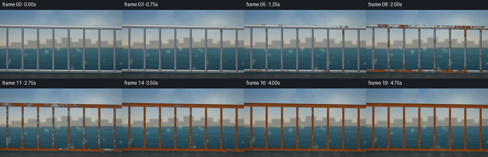
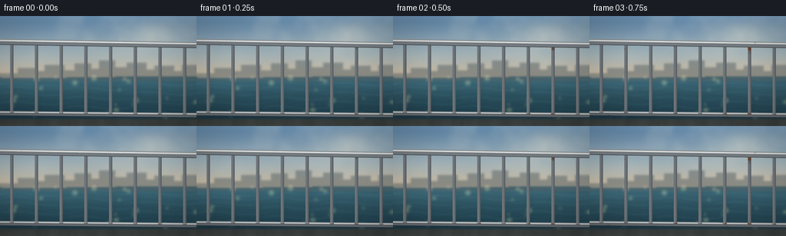

CODING AGENTS AS PIXEL WORLD MODELS
traex/DeepSeek-V4.1-Flash · phygen_159
点击播放 · 原生 RGB 像素
逐轮保存的候选
回放视频、检查图与代码变化。
每份候选均可单独播放。实际图片检查记录在下方工具轨迹中。
候选 01播放与检查图
点击播放 · 原生 RGB 像素


展开代码变化
--- 上一保存版本
+++ 本次保存版本
@@ -0,0 +1,423 @@
+"""Procedural timelapse: a polished seaside railing weathers over several years."""
+
+from pathlib import Path
+
+import numpy as np
+from PIL import Image, ImageDraw, ImageFilter
+
+import artifact_io
+
+
+W, H = 256, 144
+FPS = 4.0
+N = 20
+SS = 3
+RW, RH = W * SS, H * SS
+CASE_DIR = Path(__file__).resolve().parent
+
+
+def clamp(x, lo=0.0, hi=1.0):
+ return np.clip(x, lo, hi)
+
+
+def smoothstep(a, b, x):
+ u = clamp((x - a) / (b - a))
+ return u * u * (3.0 - 2.0 * u)
+
+
+def mix(a, b, amount):
+ amount = np.asarray(amount)
+ if amount.ndim == 2:
+ amount = amount[..., None]
+ return a * (1.0 - amount) + b * amount
+
+
+def blur_rgb(rgb, radius):
+ arr = (clamp(rgb) * 255.0 + 0.5).astype(np.uint8)
+ out = Image.fromarray(arr).filter(ImageFilter.GaussianBlur(radius))
+ return np.asarray(out).astype(np.float32) / 255.0
+
+
+def blur_mask(mask, radius):
+ arr = (clamp(mask) * 255.0 + 0.5).astype(np.uint8)
+ out = Image.fromarray(arr).filter(ImageFilter.GaussianBlur(radius))
+ return np.asarray(out).astype(np.float32) / 255.0
+
+
+def resize_float(array, size, resample=Image.Resampling.BICUBIC):
+ if array.ndim == 2:
+ img = Image.fromarray((clamp(array) * 255.0 + 0.5).astype(np.uint8))
+ return np.asarray(img.resize(size, resample)).astype(np.float32) / 255.0
+ img = Image.fromarray((clamp(array) * 255.0 + 0.5).astype(np.uint8))
+ return np.asarray(img.resize(size, resample)).astype(np.float32) / 255.0
+
+
+def noise_2d(seed, small_size, size, resample=Image.Resampling.BICUBIC):
+ rng = np.random.default_rng(seed)
+ grid = rng.random((small_size[1], small_size[0]), dtype=np.float32)
+ img = Image.fromarray((grid * 255.0 + 0.5).astype(np.uint8))
+ return np.asarray(img.resize(size, resample)).astype(np.float32) / 255.0
+
+
+def fbm(seed, size, base=(10, 6), octaves=4, persistence=0.52):
+ total = np.zeros((size[1], size[0]), dtype=np.float32)
+ weight = 0.0
+ amp = 1.0
+ for octave in range(octaves):
+ sw = max(2, int(base[0] * (2**octave)))
+ sh = max(2, int(base[1] * (2**octave)))
+ layer = noise_2d(seed + octave * 37, (sw, sh), size)
+ total += layer * amp
+ weight += amp
+ amp *= persistence
+ return total / weight
+
+
+def anisotropic_noise(seed, size, small=(100, 7), resample=Image.Resampling.BICUBIC):
+ return noise_2d(seed, small, size, resample)
+
+
+def make_background():
+ """A quiet, defocused coastal view that leaves the railing as the subject."""
+ yy, xx = np.mgrid[0:H, 0:W]
+ x = (xx + 0.5) / W
+ y = (yy + 0.5) / H
+ horizon = 0.555 + 0.006 * np.sin(x * 5.0 + 0.7)
+
+ sky_top = np.array([0.39, 0.55, 0.69], dtype=np.float32)
+ sky_mid = np.array([0.66, 0.73, 0.75], dtype=np.float32)
+ sky_horizon = np.array([0.82, 0.76, 0.66], dtype=np.float32)
+ h = clamp(y / np.maximum(horizon, 1e-4))
+ sky = mix(sky_top, sky_mid, smoothstep(0.0, 0.72, h))
+ sky = mix(sky, sky_horizon, smoothstep(0.55, 1.0, h))
+
+ cloud = fbm(11, (W, H), base=(7, 4), octaves=4, persistence=0.55)
+ cloud = blur_mask(cloud, 1.8)
+ cloud_alpha = 0.16 * smoothstep(0.37, 0.72, cloud) * (1.0 - smoothstep(0.40, 0.57, y))
+ sky = mix(sky, np.array([0.86, 0.87, 0.84], dtype=np.float32), cloud_alpha)
+
+ sun = np.exp(-(((x - 0.78) * 2.3) ** 2 + ((y - 0.17) * 3.4) ** 2) * 7.5)
+ sky += np.array([0.17, 0.12, 0.055], dtype=np.float32) * sun[..., None]
+
+ # The sea is made from broad horizontal bands so it stays calm and out of focus.
+ sea_top = np.array([0.20, 0.37, 0.43], dtype=np.float32)
+ sea_bottom = np.array([0.10, 0.23, 0.29], dtype=np.float32)
+ sea_t = clamp((y - horizon) / np.maximum(1.0 - horizon, 1e-4))
+ sea = mix(sea_top, sea_bottom, smoothstep(0.0, 1.0, sea_t))
+ bands = 0.5 + 0.5 * np.sin(y * 145.0 + 2.1 * np.sin(x * 19.0))
+ bands *= 0.5 + 0.5 * np.sin(y * 81.0 - x * 8.0 + 1.4)
+ sea += (bands * 0.035)[..., None] * np.array([0.55, 0.80, 0.80], dtype=np.float32)
+ sea *= (0.84 + 0.16 * np.exp(-((y - horizon) / 0.11) ** 2))[..., None]
+
+ bg = np.where((y >= horizon)[..., None], sea, sky)
+
+ # A low, distant shoreline and a few soft blocks suggest a city without stealing focus.
+ city = np.zeros((H, W, 3), dtype=np.float32)
+ city_mask = np.zeros((H, W), dtype=np.float32)
+ img = Image.new("L", (W, H), 0)
+ draw = ImageDraw.Draw(img)
+ buildings = [
+ (0, 75, 28, 84),
+ (23, 68, 46, 84),
+ (41, 72, 63, 84),
+ (58, 64, 83, 84),
+ (77, 71, 101, 84),
+ (97, 62, 118, 84),
+ (113, 69, 132, 84),
+ (129, 58, 149, 84),
+ (146, 67, 170, 84),
+ (165, 61, 190, 84),
+ (184, 70, 207, 84),
+ (201, 65, 226, 84),
+ (220, 72, 242, 84),
+ (237, 64, 256, 84),
+ ]
+ for left, top, right, bottom in buildings:
+ draw.rectangle((left, top, right, bottom), fill=185)
+ city_mask[top:bottom, left:right] = 1.0
+ city_mask = np.asarray(img).astype(np.float32) / 255.0
+ city_mask = blur_mask(city_mask, 0.85)
+ city_col = np.array([0.36, 0.42, 0.44], dtype=np.float32)
+ city_col = city_col * (0.82 + 0.18 * (1.0 - y[..., None]))
+ bg = mix(bg, city_col, city_mask * 0.72)
+
+ # A narrow, dark ledge grounds the railing at the bottom of the shot.
+ ledge = smoothstep(0.925, 0.945, y)
+ stone = np.array([0.23, 0.24, 0.23], dtype=np.float32)
+ stone = stone + 0.035 * (fbm(23, (W, H), base=(28, 7), octaves=3)[..., None] - 0.5)
+ bg = mix(bg, stone, ledge * 0.93)
+ bg = blur_rgb(bg, 1.1)
+
+ # Defocused highlights on the water make the foreground metal feel close.
+ bokeh = np.zeros((H, W), dtype=np.float32)
+ rng = np.random.default_rng(31)
+ for _ in range(20):
+ cx = int(rng.integers(0, W))
+ cy = int(rng.integers(int(H * 0.56), int(H * 0.93)))
+ rad = int(rng.integers(1, 4))
+ b = np.zeros((H, W), dtype=np.float32)
+ yy0, yy1 = max(0, cy - rad - 2), min(H, cy + rad + 3)
+ xx0, xx1 = max(0, cx - rad - 2), min(W, cx + rad + 3)
+ gy, gx = np.mgrid[yy0:yy1, xx0:xx1]
+ d = np.sqrt((gx - cx) ** 2 + (gy - cy) ** 2)
+ b[yy0:yy1, xx0:xx1] = smoothstep(rad + 1.5, rad - 0.5, d)
+ bokeh += b
+ bokeh = blur_mask(bokeh, 1.6)
+ bg += bokeh[..., None] * np.array([0.20, 0.18, 0.10], dtype=np.float32)
+ return clamp(bg)
+
+
+def make_rust_fields():
+ """Fixed spatial fields so corrosion grows into the same metal, not a moving texture."""
+ size = (RW, RH)
+ broad = fbm(101, size, base=(7, 4), octaves=5, persistence=0.57)
+ medium = fbm(211, size, base=(23, 12), octaves=4, persistence=0.54)
+ fine = fbm(307, size, base=(76, 38), octaves=3, persistence=0.56)
+ vertical = anisotropic_noise(409, size, small=(88, 9))
+ vertical2 = anisotropic_noise(433, size, small=(32, 5))
+ drip = anisotropic_noise(509, size, small=(45, 7))
+ return broad, medium, fine, vertical, vertical2, drip
+
+
+def rail_material(nx, ny, nz, base, rust, crust, pit, t, light, reflection):
+ """Shade a cylindrical metal surface and replace the polished response with rust."""
+ nx = np.asarray(nx)
+ ny = np.asarray(ny)
+ nz = np.asarray(nz)
+ ndl = clamp(nx * light[0] + ny * light[1] + nz * light[2])
+ diffuse = 0.30 + 0.70 * ndl
+ fresnel = 0.035 + 0.965 * (1.0 - clamp(nz)) ** 4.5
+
+ # A polished handrail mostly reflects sky above the horizon and ground below it.
+ reflected = reflection(nx, ny, nz)
+ metal = base * (0.48 + 0.52 * diffuse)[..., None]
+ metal = metal * (0.70 + 0.30 * fresnel[..., None])
+ metal = metal + reflected * (0.30 + 0.62 * fresnel[..., None])
+
+ # Broad anisotropic highlights are the visual signature of polished metal.
+ highlight = np.exp(-((ny + 0.43) / 0.105) ** 2) * (0.68 + 0.32 * np.cos(np.arctan2(nx, nz + 0.15) * 2.0))
+ highlight += 0.24 * np.exp(-((ny - 0.55) / 0.19) ** 2)
+ metal += highlight[..., None] * np.array([0.45, 0.48, 0.50], dtype=np.float32) * (1.0 - 0.76 * rust)[..., None]
+
+ edge = smoothstep(0.70, 1.0, np.abs(ny))
+ metal *= (1.0 - 0.26 * edge)[..., None]
+
+ # Rust is diffuse, irregular, and slightly lighter on the raised flakes.
+ rust_noise = clamp(0.55 * rust + 0.45 * crust)
+ orange = np.array([0.61, 0.29, 0.105], dtype=np.float32)
+ ochre = np.array([0.47, 0.30, 0.14], dtype=np.float32)
+ dark = np.array([0.24, 0.125, 0.065], dtype=np.float32)
+ rust_col = mix(dark, orange, smoothstep(0.15, 0.85, rust_noise))
+ rust_col = mix(rust_col, ochre, 0.28 * smoothstep(0.35, 0.75, crust))
+ rust_col *= (0.76 + 0.38 * clamp(0.5 + 0.5 * ny))[..., None]
+ rust_col *= (1.0 - 0.34 * pit)[..., None]
+
+ pale = np.array([0.58, 0.53, 0.45], dtype=np.float32)
+ rust_col = mix(rust_col, pale, 0.24 * smoothstep(0.64, 0.95, crust) * (0.4 + 0.6 * t))
+ color = mix(metal, rust_col, clamp(rust))
+ color *= (1.0 - 0.42 * pit * smoothstep(0.18, 0.7, rust))[..., None]
+
+ # Sparse late grime keeps the polished areas from looking newly cleaned.
+ grime = (0.028 * t) * clamp(0.5 + 0.5 * np.sin(ny * 41.0 + nx * 17.0))
+ color *= (1.0 - grime)[..., None]
+ return clamp(color)
+
+
+def background_reflection(nx, ny, nz, t):
+ sky = np.array([0.57, 0.66, 0.72], dtype=np.float32)
+ horizon = np.array([0.86, 0.78, 0.64], dtype=np.float32)
+ ground = np.array([0.16, 0.19, 0.20], dtype=np.float32)
+ above = smoothstep(0.10, -0.75, ny)
+ lower = smoothstep(-0.05, 0.58, ny)
+ col = mix(ground, horizon, above)
+ col = mix(col, sky, smoothstep(-0.2, -0.95, ny) * 0.52)
+ col = mix(col, ground, lower)
+ col *= (1.0 - 0.10 * t)
+ return col
+
+
+def render_frame(index, background, fields):
+ broad, medium, fine, vertical, vertical2, drip = fields
+ t = index / (N - 1)
+ age = 0.035 + 0.965 * (t**0.82)
+ yy, xx = np.mgrid[0:RH, 0:RW]
+ x = (xx + 0.5) / RW
+ y = (yy + 0.5) / RH
+
+ # Railing dimensions in normalized screen space.
+ top_center = 0.235 + 0.030 * x
+ top_r = 0.028
+ bottom_center = 0.884 + 0.018 * x
+ bottom_r = 0.023
+ bar_xs = np.linspace(0.060, 0.940, 8)
+ bar_r = 0.0092
+
+ # A fixed, slightly cool key light from upper-left, with warm bounce from the sea.
+ light = np.array([-0.56, -0.74, 0.62], dtype=np.float32)
+ light /= np.linalg.norm(light)
+ warm_bounce = np.array([0.35, 0.25, 0.12], dtype=np.float32)
+
+ # Background is rendered once and gently defocused; it changes only through light.
+ bg = background.copy()
+ bg *= (1.0 + 0.025 * np.sin(t * np.pi * 1.2))[..., None]
+ bg += (0.010 * t) * np.array([0.35, 0.40, 0.44], dtype=np.float32)
+ out = resize_float(bg, (RW, RH), Image.Resampling.BICUBIC)
+
+ # A soft contact shadow under the rail helps separate it from the sea.
+ shadow = np.zeros((RH, RW), dtype=np.float32)
+ shadow += smoothstep(0.34, 0.22, np.abs(y - (top_center + top_r * 1.9))) * 0.20
+ shadow += smoothstep(0.085, 0.025, np.abs(y - (bottom_center + bottom_r * 1.8))) * 0.25
+ for bx in bar_xs:
+ shadow += smoothstep(0.030, 0.008, np.abs(x - bx - 0.010)) * smoothstep(0.31, 0.85, y) * 0.055
+ shadow = blur_mask(shadow, 3.0)
+ out *= (1.0 - 0.45 * shadow)[..., None]
+
+ def add_object(mask, nx, ny, nz, base, rust, crust, pit, object_light, edge_ao=None):
+ nonlocal out
+ color = rail_material(nx, ny, nz, base, rust, crust, pit, t, object_light,
+ lambda a, b, c: background_reflection(a, b, c, t))
+ if edge_ao is not None:
+ color *= (1.0 - 0.22 * edge_ao)[..., None]
+ out = mix(out, color, clamp(mask))
+
+ # Bottom rail: darker, partly shaded, and the first place where ground moisture bites.
+ u_bottom = (y - bottom_center) / bottom_r
+ inside_bottom = (np.abs(u_bottom) < 1.0) & (x > -0.035) & (x < 1.035)
+ alpha_bottom = smoothstep(1.0, 0.90, np.abs(u_bottom)) * inside_bottom
+ nz_bottom = np.sqrt(clamp(1.0 - u_bottom * u_bottom))
+ bottom_rust_field = (
+ broad * 0.58 + medium * 0.28 + fine * 0.14
+ + 0.12 * smoothstep(0.72, 0.96, y)
+ + 0.07 * smoothstep(0.2, 1.0, u_bottom)
+ )
+ bottom_rust = smoothstep(0.91 - 0.70 * age, 1.05 - 0.53 * age,
+ bottom_rust_field + 0.13 * age)
+ bottom_crust = smoothstep(0.58, 0.88, medium * 0.65 + fine * 0.35) * bottom_rust
+ bottom_pit = smoothstep(0.77, 0.94, fine) * smoothstep(0.16, 0.65, age)
+ add_object(alpha_bottom, np.zeros_like(x), u_bottom, nz_bottom,
+ np.array([0.48, 0.51, 0.54], dtype=np.float32),
+ bottom_rust, bottom_crust, bottom_pit, light,
+ edge_ao=smoothstep(0.64, 1.0, np.abs(u_bottom)))
+
+ # Vertical rods. Their long vertical highlights and drips are important at this scale.
+ for bar_index, bx in enumerate(bar_xs):
+ u = (x - bx) / bar_r
+ inside = (np.abs(u) < 1.0) & (y > top_center + top_r * 0.20) & (y < bottom_center - bottom_r * 0.15)
+ alpha = smoothstep(1.0, 0.84, np.abs(u)) * inside
+ nz = np.sqrt(clamp(1.0 - u * u))
+ joint_top = np.exp(-((y - (top_center + top_r * 0.32)) / 0.038) ** 2)
+ joint_bottom = np.exp(-((y - (bottom_center - bottom_r * 0.30)) / 0.050) ** 2)
+ bar_seed = 17 * bar_index
+ bar_noise = np.roll(medium, bar_seed, axis=1)
+ bar_fine = np.roll(fine, bar_seed * 2, axis=1)
+ bar_rust_field = (
+ 0.50 * bar_noise + 0.25 * bar_fine + 0.15 * broad
+ + 0.19 * joint_top + 0.16 * joint_bottom
+ + 0.065 * vertical
+ + 0.035 * np.sin(y * 90.0 + bx * 31.0)
+ )
+ # Rust runs downward from the top joint in narrow, irregular streaks.
+ streak = smoothstep(0.58, 0.82, drip * 0.72 + vertical2 * 0.28)
+ streak *= np.exp(-clamp(y - (top_center + top_r * 0.5)) / 0.30)
+ bar_rust_field += 0.11 * streak
+ bar_rust = smoothstep(0.91 - 0.70 * age, 1.05 - 0.53 * age,
+ bar_rust_field + 0.13 * age)
+ bar_crust = smoothstep(0.57, 0.88, bar_fine * 0.55 + medium * 0.45) * bar_rust
+ bar_pit = smoothstep(0.79, 0.96, bar_fine) * smoothstep(0.18, 0.68, age)
+ add_object(alpha, u, np.zeros_like(y), nz,
+ np.array([0.55, 0.58, 0.61], dtype=np.float32),
+ bar_rust, bar_crust, bar_pit, light,
+ edge_ao=smoothstep(0.64, 1.0, np.abs(u)))
+
+ # Small collars at the joints make the corrosion's starting points legible.
+ for cy, rr in ((top_center + top_r * 0.36, bar_r * 1.36),
+ (bottom_center - bottom_r * 0.36, bar_r * 1.30)):
+ cu = (x - bx) / rr
+ cv = (y - cy) / (rr * 0.72)
+ cmask = smoothstep(1.0, 0.82, np.sqrt(cu * cu + cv * cv))
+ collar_nz = np.sqrt(clamp(1.0 - np.minimum(cu * cu + cv * cv, 1.0)))
+ collar_rust = smoothstep(0.80 - 0.50 * age, 1.03 - 0.36 * age,
+ bar_noise * 0.62 + bar_fine * 0.25 + 0.22)
+ collar_crust = smoothstep(0.56, 0.88, bar_fine) * collar_rust
+ collar_pit = smoothstep(0.76, 0.94, bar_fine) * smoothstep(0.16, 0.6, age)
+ add_object(cmask, cu, cv, collar_nz,
+ np.array([0.45, 0.48, 0.51], dtype=np.float32),
+ collar_rust, collar_crust, collar_pit, light)
+
+ # Top handrail: the largest and most polished form in the shot.
+ u_top = (y - top_center) / top_r
+ inside_top = (np.abs(u_top) < 1.0) & (x > -0.035) & (x < 1.035)
+ alpha_top = smoothstep(1.0, 0.91, np.abs(u_top)) * inside_top
+ nz_top = np.sqrt(clamp(1.0 - u_top * u_top))
+ top_rust_field = (
+ 0.53 * broad + 0.27 * medium + 0.20 * fine
+ + 0.10 * smoothstep(0.2, -1.0, u_top)
+ + 0.045 * vertical
+ )
+ top_rust = smoothstep(0.93 - 0.73 * age, 1.06 - 0.55 * age,
+ top_rust_field + 0.12 * age)
+ top_crust = smoothstep(0.61, 0.91, medium * 0.58 + fine * 0.42) * top_rust
+ top_pit = smoothstep(0.80, 0.96, fine) * smoothstep(0.14, 0.62, age)
+ add_object(alpha_top, np.zeros_like(x), u_top, nz_top,
+ np.array([0.62, 0.65, 0.68], dtype=np.float32),
+ top_rust, top_crust, top_pit, light,
+ edge_ao=smoothstep(0.60, 1.0, np.abs(u_top)))
+
+ # A few crisp edge glints and water beads keep the initial state clearly polished.
+ if index < 7:
+ bead_strength = 0.30 * (1.0 - index / 7.0)
+ beads = np.zeros((RH, RW), dtype=np.float32)
+ rng = np.random.default_rng(777 + index * 13)
+ for _ in range(18):
+ bx = rng.uniform(-0.02, 1.02)
+ by = rng.uniform(top_center.min() - top_r * 0.4, top_center.max() + top_r * 0.4)
+ br = rng.uniform(0.0018, 0.0045)
+ gx = (x - bx) / br
+ gy = (y - by) / (br * 0.72)
+ beads += np.exp(-(gx * gx + gy * gy) * 3.0)
+ beads = clamp(beads) * inside_top
+ out += beads[..., None] * bead_strength * np.array([0.80, 0.84, 0.78], dtype=np.float32)
+
+ # Sparse mineral bloom on the lower rail late in the sequence.
+ bloom = smoothstep(0.78, 0.96, y) * smoothstep(0.54, 0.92, t)
+ bloom *= smoothstep(0.52, 0.78, medium)
+ out = mix(out, np.array([0.41, 0.46, 0.34], dtype=np.float32), bloom * 0.16)
+
+ # Gentle vignette and final filmic contrast.
+ vx = (x - 0.5) * 1.25
+ vy = (y - 0.5) * 1.05
+ vignette = 1.0 - 0.18 * smoothstep(0.35, 0.95, np.sqrt(vx * vx + vy * vy))
+ out *= vignette[..., None]
+ out = clamp(out)
+ out = np.power(out, 0.92)
+ return out
+
+
+def render_all():
+ background = make_background()
+ fields = make_rust_fields()
+ frames = []
+ for index in range(N):
+ big = render_frame(index, background, fields)
+ small = resize_float(big, (W, H), Image.Resampling.LANCZOS)
+ frames.append((clamp(small) * 255.0 + 0.5).astype(np.uint8))
+ return np.stack(frames, axis=0)
+
+
+def save_candidate(frames, name):
+ target = CASE_DIR / ".tmp" / name
+ target.mkdir(parents=True, exist_ok=True)
+ for filename in ("prompt.txt", "task_spec.json"):
+ (target / filename).write_text((CASE_DIR / filename).read_text())
+ artifact_io.save(frames, target)
+
+
+def main():
+ frames = render_all()
+ artifact_io.save(frames, CASE_DIR)
+ save_candidate(frames, "candidate_v1")
+ print(f"generated {frames.shape} frames at {FPS:g} fps")
+
+
+if __name__ == "__main__":
+ main()
可观测工具轨迹
实际执行的命令与返回图片。
命令 1exit 0
/bin/bash -c "pwd && rg --files -g 'prompt.txt' -g 'GENERATION_RULES.md' -g 'task_spec.json' -g '"'!*.mp4'"'"
命令 2exit 0
/bin/bash -c "sed -n '1,240p' prompt.txt"
命令 3exit 0
/bin/bash -c "find . -maxdepth 2 -type f -printf '%p %s bytes\\n' | sort | head -200"
命令 4exit 0
/bin/bash -c "cat GENERATION_RULES.md && printf '\\n--- TASK SPEC ---\\n' && cat task_spec.json"
命令 5exit 0
/bin/bash -c "sed -n '1,260p' player_template.html"
命令 6exit 0
/bin/bash -c "sed -n '1,260p' artifact_io.py"
命令 7exit 0
/bin/bash -c "python - <<'PY' import sys mods=['numpy','PIL','imageio','cv2','scipy'] for m in mods: try: x=__import__(m); print(m, getattr(x,'__version__','ok')) except Exception as e: print(m,'MISSING',e) PY"
命令 8exit 0
/bin/bash -c 'command -v chafa || true; command -v viu || true; command -v jp2 || true; command -v ffmpeg || true; command -v convert || true'
命令 9exit 0
/bin/bash -c "python - <<'PY'
from PIL import Image
print('PIL ok')
PY"命令 10exit 0
/bin/bash -c 'git status --short && ls -la'
命令 11exit 1
/bin/bash -c 'python generate.py'
命令 12exit 1
/bin/bash -c 'python generate.py'
命令 13exit 0
/bin/bash -c "rg -n '\\+=' generate.py"
命令 14exit 1
/bin/bash -c 'python generate.py'
命令 15exit 1
/bin/bash -c 'python generate.py'
命令 16exit 1
/bin/bash -c 'python generate.py'
命令 17exit 0
/bin/bash -c 'python generate.py'
命令 18exit 0
/bin/bash -c "python - <<'PY'
from PIL import Image
import numpy as np
im=Image.open('inspection.png')
print('inspection',im.size)
a=np.asarray(im)
print('mean',a.mean((0,1)), 'min/max',a.min(),a.max())
frames=np.load('pixels.npz')['pixels']
# stats of adjacent RGB changes and first/last
prev=None
for i in [0,5,10,15,19]:
im=Image.fromarray(frames[:,:,i].astype(np.uint8)) if False else None
print('packed', frames.shape, frames.dtype)
# direct frames
for i in [0,5,10,15,19]:
f=np.asarray(Image.open(f'frames/{i:02d}.png'))
print(i, f.mean((0,1)).round(1), f.std().round(1))
PY"命令 19exit 0
/bin/bash -c "python - <<'PY'
from PIL import Image
import numpy as np
chars=' .,:;irsXA253hMHGS#9B&@'
for idx in [0,9,19]:
a=np.asarray(Image.open(f'frames/{idx:02d}.png').convert('RGB')).astype(float)
lum=(a*np.array([.2126,.7152,.0722])).sum(2)
# 64 x 32 block means
h,w=lum.shape
b=lum[:h//2*2,:w//4*4].reshape(h//2,2,w//4,4).mean((1,3))
q=np.clip(b/256*len(chars),0,len(chars)-1).astype(int)
print('\\nFRAME',idx)
for row in q[::2]: print(''.join(chars[i] for i in row))
PY"命令 20exit 0
/bin/bash -c "python - <<'PY'
from PIL import Image
import numpy as np
for i in [0,5,10,15,19]:
a=np.asarray(Image.open(f'frames/{i:02d}.png')).astype(float)/255
# top rail around y 30-39, bars y 45-122, bottom rail y125-132
zones={'top':a[30:40,20:236], 'bars':a[50:120,20:236], 'bottom':a[124:133,20:236]}
print('\\n',i)
for k,z in zones.items():
print(k,'mean',np.round(z.mean((0,1))*255,1),'std',round(float(z.std()*255),1),'sat',round(float((z.max(2)-z.min(2)).mean()*255),1))
# Diff distributions
fs=[np.asarray(Image.open(f'frames/{i:02d}.png')).astype(float) for i in range(20)]
print('adj mean diff',np.round([np.abs(fs[i]-fs[i-1]).mean() for i in range(1,20)],2))
print('first-last diff',round(np.abs(fs[0]-fs[-1]).mean(),2))
PY"命令 21exit 0
/bin/bash -c "python - <<'PY'
from PIL import Image
import numpy as np
a=np.asarray(Image.open('inspection.png'))
# Crop selected images into larger individual review sheets, nearest upscale.
for i in [0,9,19]:
im=Image.open(f'frames/{i:02d}.png').resize((768,432),Image.Resampling.NEAREST)
im.save(f'.tmp/review_{i:02d}.png')
print('saved review crops')
PY"命令 22exit 0
/bin/bash -c "python - <<'PY'
import numpy as np
from PIL import Image
for idx in [0,9,19]:
a=np.asarray(Image.open(f'frames/{idx:02d}.png')).astype(float)
# print average RGB per top rail x bins and bottom rail x bins
for name,y0,y1 in [('top',30,40),('bars',50,120),('bottom',124,133)]:
z=a[y0:y1]
bins=z.reshape(z.shape[0],32,8,3).mean((0,2)).round().astype(int)
print(idx,name,bins.tolist())
PY"命令 23exit 0
/bin/bash -c "python - <<'PY'
from PIL import Image
import numpy as np
for idx in [0,4,8,12,16,19]:
a=np.asarray(Image.open(f'frames/{idx:02d}.png')).astype(float)
print('\\nframe',idx)
for bx in [15,45,74,104,134,163,193,222]:
# center of rods over mid-height
z=a[50:120,bx-1:bx+2].mean((0,1))
# ratio rust red/green and brightness
print(bx, tuple(z.round().astype(int)), round(float(z[0]/max(z[1],1)),2), end=' | ')
print()
PY"命令 24exit 0
/bin/bash -c "python - <<'PY'
from PIL import Image
import numpy as np
for idx in [0,9,19]:
a=np.asarray(Image.open(f'frames/{idx:02d}.png')).astype(float)
print('frame',idx)
for bx in [15,45,74,104,134,163,193,222]:
x0=int(bx*256/256)
z=a[50:120,x0-2:x0+3]
red=(z[:,:,0] > z[:,:,1]*1.08).mean()
print(bx,'maxRG',round(float((z[:,:,0]/np.maximum(z[:,:,1],1)).max()),2),'fracred',round(float(red),2))
PY"命令 25exit 0
/bin/bash -c "python - <<'PY'
from PIL import Image
import numpy as np
for idx in [0,9,19]:
a=np.asarray(Image.open(f'frames/{idx:02d}.png')).astype(float)
print('frame',idx)
for bx in [15,48,80,112,144,176,208,241]:
z=a[50:120,bx-2:bx+3]
red=(z[:,:,0] > z[:,:,1]*1.08).mean()
print(bx, 'mean',tuple(z.mean((0,1)).round().astype(int)), 'rg',round(float((z[:,:,0]/np.maximum(z[:,:,1],1)).max()),2),'fracred',round(float(red),2),end=' | ')
print()
PY"命令 26exit 0
/bin/bash -c "find . -maxdepth 2 -type f -printf '%p %s bytes\\n' | sort | head -100"
保存候选 1 份；完成命令 26 次；可验证图片返回 0 张。原始 API 响应与完整日志保留在本地。